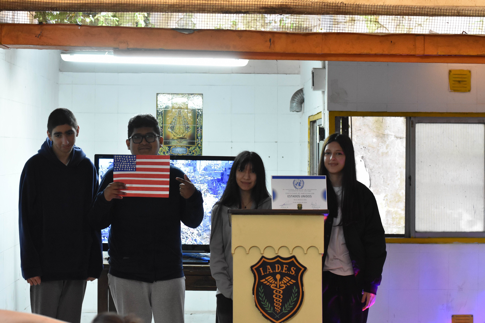
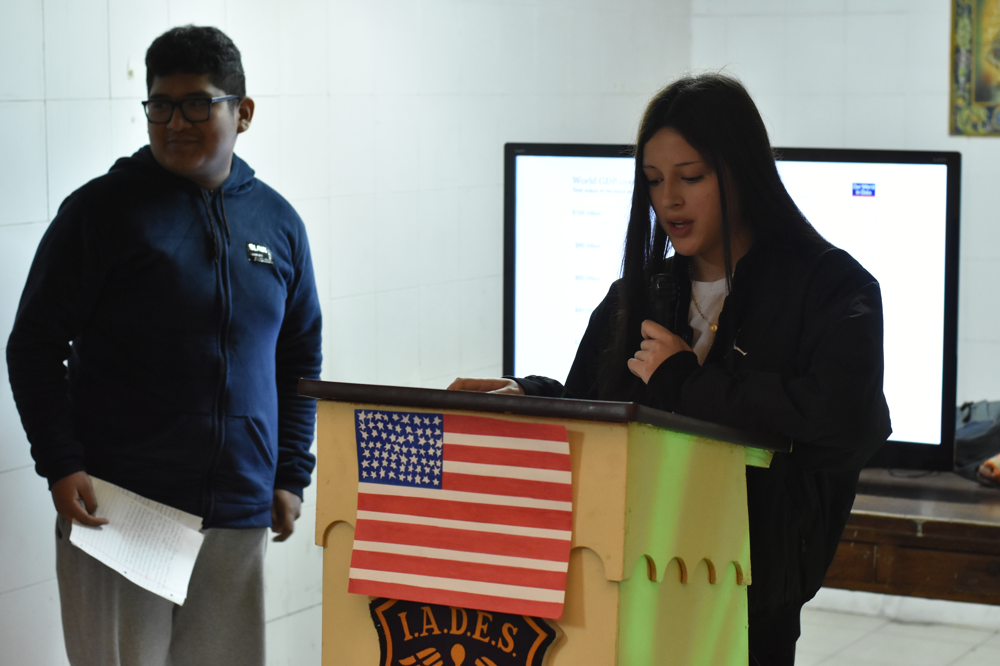
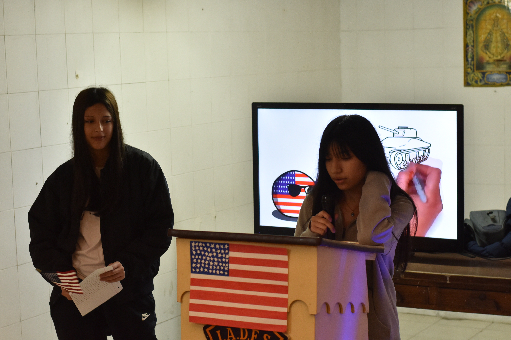

ESTADOS UNIDOS

Estudiantes: Chambi Benjamin, Medina Aime, Purizaca Rosa y Uberti Santiago
Señores presidentes, distinguidos representantes de los estados miembros, la delegación de Estados Unidos agradece la oportunidad de participar en este importante debate. En esta ocasión abordaremos la problemática de la paz y la seguridad internacional y su vínculo con el desarrollo sostenible y presentaremos la posición de nuestro país al respecto.
La delegación de Estados Unidos sostiene que esta cuestión debe ser tratada como una prioridad, una prioridad para la paz, una prioridad para la comunidad internacional y una prioridad para las futuras generaciones. Nuestra posición se fundamenta en tres pilares principales.

Primero, la defensa de la democracia, los derechos humanos y un orden internacional basado en reglas. Esta defensa se basa en marcos concretos como la carta de las Naciones Unidas y la Declaración Universal de Derechos Humanos en 1948.
En segundo lugar, la seguridad y la cooperación. Ningún país puede enfrentar solos los desafíos globales. Por ello, creemos que es fundamental fortalecer el multilateralismo y el rol de esta organización como una unión global, como un consenso efectivo y como la única vía legítima para la paz.

En tercer lugar, el compromiso con la innovación y el desarrollo sostenible. Según la agenda 2030 de la Organización de las Naciones Unidas, la tecnología y la inversión son claves. Estados Unidos apuesta a la tecnología, a la inversión y al crecimiento económico como herramientas para lograr soluciones duraderas.
Por todo esto, Estados Unidos propone fortalecer el diálogo, buscar consensos efectivos y asumir responsabilidades compartidas. Creemos firmemente que la paz no se impone con la fuerza sino que se construye mediante el respeto a los derechos humanos, la justicia y el cumplimiento de los acuerdos internacionales. Invitamos a cada país a trabajar de forma conjunta y comprometida para que todas las personas del mundo puedan vivir en libertad, con dignidad y en paz. Muchas gracias.